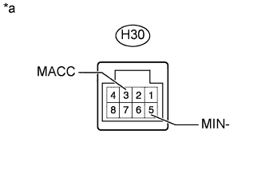
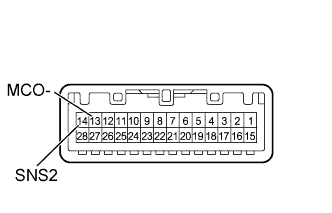
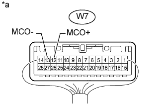

АУДИОВИЗУАЛЬНАЯ СИСТЕМА (для моделей без системы навигации) > Цепь микрофона между микрофоном и радиоприемником |
| 1.ПРОВЕРЬТЕ РАДИОПРИЕМНИК В СБОРЕ |
|  |
Отсоедините разъем H30 радиоприемника.
Измерьте сопротивление в соответствии со значениями, приведенными в таблице ниже.
| Контакты для подключения диагностического прибора | Условие | Заданные условия |
| H30-5 (MIN-) - масса | Всегда | Менее 1 Ом |
Измерьте напряжение в соответствии со значениями, приведенными в таблице.
| Контакты для подключения диагностического прибора | Положение переключателя | Заданные условия |
| H30-3 (MACC) - масса | Замок зажигания в положении ACC | 4,75 - 5,25 В |
| *a | Устройство с неподсоединенным жгутом проводов (радиоприемник в сборе) |
| результат | Следующий шаг |
| OK | А |
| NG (для моделей без вспомогательного индикатора) | B |
| NG (для моделей со вспомогательным индикатором) | C |
|
| ||||
|
| ||||
| А | |
| 2.ПРОВЕРЬТЕ ЖГУТ ПРОВОДОВ И РАЗЪЕМ (РАДИОПРИЕМНИК - ЛАМПА ИНДИВИДУАЛЬНОГО ОСВЕЩЕНИЯ) |
Отсоедините разъем H30 радиоприемника.
Отсоедините разъем W7 лампы индивидуального освещения.
Измерьте сопротивление в соответствии со значениями, приведенными в таблице ниже.
| Контакты для подключения диагностического прибора | Условие | Заданные условия |
| H30-3 (MACC) - W7-11 (MACC) | Всегда | Менее 1 Ом |
| H30-2 (MIN+) - W7-12 (MCO+) | Всегда | Менее 1 Ом |
| H30-5 (MIN-) - W7-13 (MCO-) | Всегда | Менее 1 Ом |
| H30-1 (SNS2) - W7-14 (SNS2) | Всегда | Менее 1 Ом |
| H30-3 (MACC) - масса | Всегда | 10 кОм или более |
| H30-2 (MIN+) - масса | Всегда | 10 кОм или более |
| H30-5 (MIN-) - масса | Всегда | 10 кОм или более |
| H30-1 (SNS2) - масса | Всегда | 10 кОм или более |
|
| ||||
| OK | |
| 3.ПРОВЕРЬТЕ ЛАМПУ ИНДИВИДУАЛЬНОГО ОСВЕЩЕНИЯ |
|  |
Снимите лампу индивидуального освещения в сборе (Нажмите здесь).
Измерьте сопротивление в соответствии со значениями, приведенными в таблице ниже.
| Контакты для подключения диагностического прибора | Условие | Заданные условия |
| 14 (SNS2) - 13 (MCO-) | Всегда | Менее 1 Ом |
|
| ||||
| OK | |
| 4.ПРОВЕРЬТЕ ЛАМПУ ИНДИВИДУАЛЬНОГО ОСВЕЩЕНИЯ |
|  |
Подсоедините осциллограф к контактам W7-12 (MCO+) и W7-13 (MCO-) разъема лампы индивидуального освещения.
Проверьте форму сигнала микрофона телефона с помощью осциллографа.
| Результат | Следующий шаг |
| Выводится сигнал, синхронизированный с голосовым сигналом, который поступает на микрофон телефона | А |
| Не выводится сигнал, синхронизированный с голосовым сигналом, поступающим на микрофон телефона | B |
| *a | Устройство с подсоединенным жгутом проводов (лампа индивидуального освещения) |
|
| ||||
| OK | ||
| ||
| 5.ЗАМЕНИТЕ МИКРОФОН ТЕЛЕФОНА ДРУГИМ И ПОВТОРИТЕ ПРОВЕРКУ |
Замените микрофон телефона в сборе заведомо исправным (Нажмите здесь).
Проверьте, появляется ли данная неисправность снова.
|
| ||||
| OK | ||
| ||